15 Individual Variation in Vocabulary
Of all the individual differences described to date in the literature on early child language, variations in rate present the least interesting challenge to traditional ‘universalist’ models of development, If it can be shown that all children go through the same basic sequence, activating a common set of structures and processes, then small variations in the onset time for specific language milestones might represent little more than a minor perturbation to a maturational theory (like variations in the onset of puberty). Putative variations in style of development are more problematic, because they raise questions about the order in which structures are acquired, and the mechanisms used to acquire those structures. (Bates et al. 1994)
Preceeding chapters have dealt with the degree of variability between individuals (Chapter 5) and the stability of individuals’ learning (4). Then Chapters 6 and 9 used demographic factors to explain variability. In general, our treatment of variability has focused on issues of learning rate in the sense discussed by Bates et al. in the quote above (or, to be more precise, vocabulary size). With the exception of Chapter 9, which examined the rate of learning individual words, we have not dealt yet with issues of style.
What does it mean for two children to show differences in language learning style? Intuitively, some aspect of the learning process should differ. Unfortunately, from the data that we use here, we cannot observe process – we can only observe the outcome of learning: knowledge. Thus, children must exhibit some differences in the way their vocabulary grows. This difference could be distributional and inferred indirectly from cross-sectional data or it could be shown directly through longitudinal data (though this move limits the number of datasets we can use from Wordbank).
One prominent candidate for a stylistic difference in language acquisition is the distinction between “referential” and “expressive” children. In an early report on individual differences in vocabulary acquisition, Nelson (1973) noticed that there was substantial variation in how many nouns children had in thir vocabulary. She called children who had more than half of their vocabulary devoted to nouns “referential” children. They tended to have speech that was less syntactically complex and showed faster vocabulary growth. In contrast, “expressive” children had speech that was more syntactically complex and had fewer nouns. (???) proposed a related version of this distinction, focusing on speech acts from two children in the middle of the second year and labeling them as “code oriented” (focused on labeling, similar to “referential”) vs. “message oriented” (instrumental, social requests, similar to “expressive”).
Since this seminal work, the referential/expressive distinction has become enshrined in the literature as a canonical aspect of variation in children’s style. Yet further debate about the consequences of this stylistic distinction continued in the literature. For example, Bates, Bretherton, and Snyder (1988) observed a correlation between the proportion of nouns in the children’s vocabulary and their vocabulary size and suggested the possibility that a referential style might be more effective for learning. Reacting to this claim, Pine and Lieven (1990) argued that the direction of causality might be reversed, however: perhaps having a bigger vocabulary (at least at a certain point) would lead to a greater representation for nouns.6
While exploring the referential/expressive phenomenon more rigorously, Bates et al. (1994) presented analyses largely supporting that view: much systematic variation in the “referentiality” (proportion nouns) in children’s vocabularies was due to the size of their vocabulary. As children’s vocabularies grow, they tends to increase in their over-representation of nouns (as shown also in Chapter 11). Thus, two children of the same age who have different proportions of nouns may also have different overall vocabulary sizes. After controlling for this factor, Bates et al. (1994) found only more limited evidence for stylistic variation. In the first subsection of this chapter, we pick up these analyses and apply them broadly to our dataset.
A second area of stylistic variation that has been much discussed is whether some children go through a vocabulary “spurt,” defined as a change in the rate of vocabulary growth. The idea of a “spurt” or “explosion” occurs in a wide variety of discussions of early vocabulary (e.g., Nelson 1973; Kamhi 1986; Bates, Bretherton, and Snyder 1988, see e.g., Dapretto and Bjork (2000) for review). Clearly, from the average growth rates observed in Chapter 5, children’s vocabulary growth accelerates dramatically during the period following first birthday and the emergence of production. Investigations of this acceleration have focused on two distinct features: its variation across children and its explanation.
Although there has been a tremendous amount of discussion of explanations for accelerations in vocabulary growth, we will not investigate this topic further here. Our data not allow us to investigate issues of mechanistic process directly. In addition, a short but convincing analysis by (???) suggests that such acceleration is over-determined in the sense that it will likely emerge from almost any plausible mechanism acquisition mechanisms. Assuming that words vary in difficulty as a normal distribution, vocabulary growth will naturally accelerate with increases in a child’s ability. Thus, making reverse inferences from the presence of acceleration to a particular mechanism is unwarranted.
The second issue – variation in acceleration – is related our aim here, however. Does every child’s vocabulary acceleration follow the same general pattern, or is there substantial variation in the type of growth that is followed, for example in the point at which acceleration begins, or the specific shape of the growth curve? Ganger and Brent (2004) report a systematic study of a subpart of this issue: whether there is a discontinuity in growth rate for individual children. Definining a spurt specifically as a change in the rate of acceleration, they conduct a quantitative analysis of whether such a change occurs. Our second set of analyses follows up on this general issue.
The final area of stylistic variation that we address in our third subsection is the question of whether there are some children who are more fluent producers vs. others who have a large vocabulary in comprehension but more limited production. At the clinical extreme significant variation in this respect must be present, because there are some children with various apraxias of speech that have strong comprehension but serious production difficulties. The question is whether, in a typically developing population, we can detect systematic variation on this dimension.
In general, the methodological issue of this chapter is that there are many measures we can define regarding individual variability, and the trick will be telling signal from noise (and from artifact). We typically rely on three strategies. The first is to ask whether a particular measure is valid in the sense that it is related to some other aspect of the data. We are in the position of not having independent validation measures to apply to, but we can still reasonably ask whether one measure (e.g., proportion of nouns) is related to another (e.g., vocabulary for age). The second strategy is – as throughout – to look for consistency across samples in a particular pattern. Such consistency suggests some signal, though in each case we will try to be cautious about differentiating this signal from statistical artifact. The third strategy is to look for consistency in a particular measure throughout development (e.g., evaluating “test-retest” reliability of a measure).
Summarizing the conclusions from our various different sub-analyses:
Referential vs. expressive variation is present but is over-estimated by analyses that do not correct for vocabulary size, since smaller vocabularies tend to be more noun-heavy.
The apparent phenomenon of the “vocabulary spurt” is not reliably observed across participants.
It is tricky to use comprehension data to estimate variability between individuals in how much they produce vs. comprehend, due to likely cross-linguistic differences in the uptake of instructions regarding comprehension.
Finally, recalling the conclusions of Chapter 4, variations in rate – though perhaps least interesting from a Batesian perspective – nevertheless are the most detectable first order signal in our data.
15.1 Variation in Vocabulary Composition
In this subsection we examine the question of variation across children in referential vs. expressive vocabulary. Following Bates et al. (1994), we operationalize out the notion of a “referential” vocabulary as simply one that has relatively more nouns. While there are other more nuanced measures that we can construct, this one has the advantage of being directly related to the framework in Chapter ??. We use that framework investigate vocabulary composition in individuals. Recall that we computed the proportion of children’s vocabulary that was made up of nouns as a function of age in that chapter.
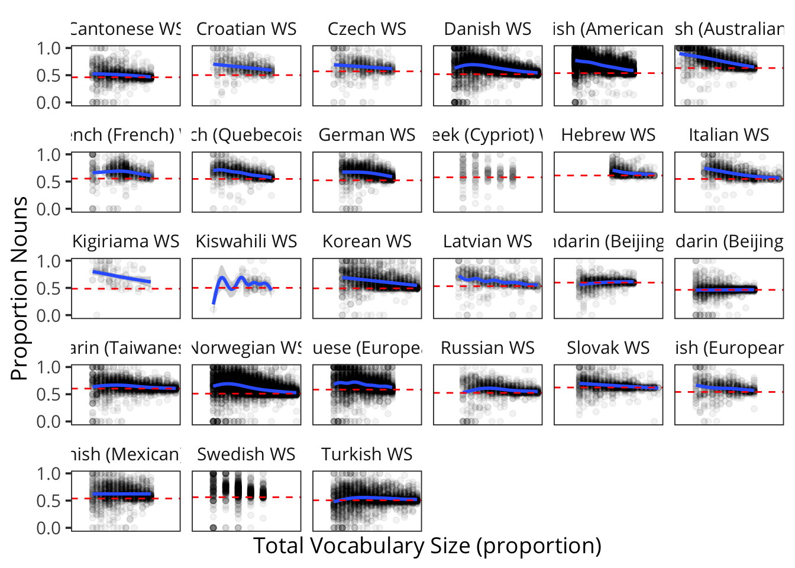 That pattern is shown in the figure above. It’s clear that there is an overall trend for an over-representation of nouns, as shown by the blue line (representing the smoothed mean proportion nouns) being above the red dashed line (total porportion nouns on the form). The size of this over-representation is the topic of Chapter ??. Here we examine variability in over-representation.
15.1.1 Variability and Vocabulary Size
We follow Nelson (1973), who suggests that chilren who are more referential in their style also have faster vocabulary growth.7 One way of cashing out this claim empirically is to suggest that the proportion of nouns in a child’s vocabulary should be a predictor of vocabulary size, over and above age. We evaluate this claim below.
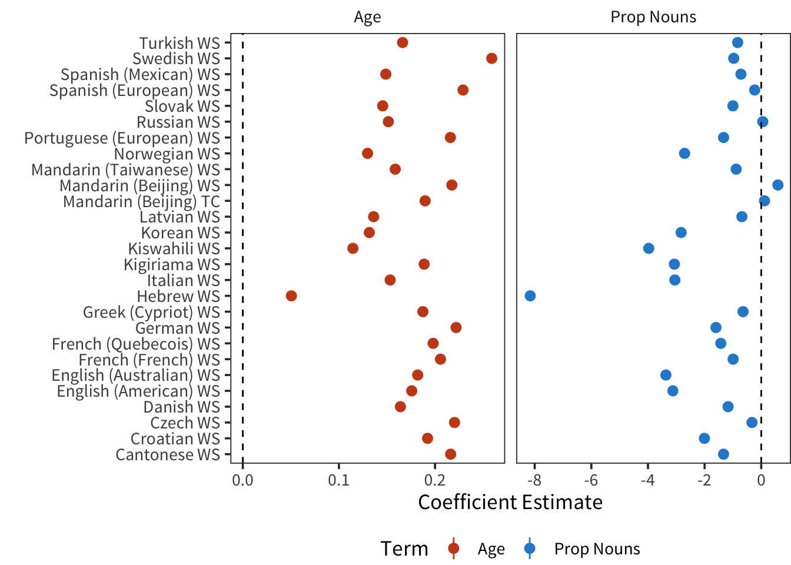
A simple model of this hypothesis is a GLM predicting the number of CDI words a child produces as a function of age, proportion nouns, and their interaction. The coefficients of this model are shown above. Age coefficients are positive (indicating more words with age) and proportion of nouns is positive as well, indicating an independent contribution of this variable over and above age. The interaction of the two is negative because proportion of nouns converges to the total proportion of nouns on the form as vocabulary is large, so this variable is uniform across children for older ages.
This result appears to provide support for the relationship between the referential/expressive distinction and vocabulary size. But, as noted by Lieven, Pine, and Barnes (1992), the bigger your vocabulary is, the bigger your noun bias on average. Thus, the causality in the relation above could be reversed. Proportion nouns could be predictive of vocabulary size not because children with a particular style have bigger vocabularies, but because having more nouns in your vocabulary tends to indicate that you are further along.
Put another way, perhaps all children follow the same trajectory through the noun bias. Even in this scenario, knowing the size of a child’s noun bias will tell you something about vocabulary size, without that implying that the child is following a different trajectory.
One way to circumvent this critique statistically is to measure whether a particular child has a greater-than-average, vocabulary-adjusted noun-bias. In other words, if we remove the endogenous signal (the average correlation with noun bias and vocabulary), can we still find a relation with individuals’ degree of noun bias and vocabulary size? Will children with even more noun bias tend to have even larger vocabularies relative to age?
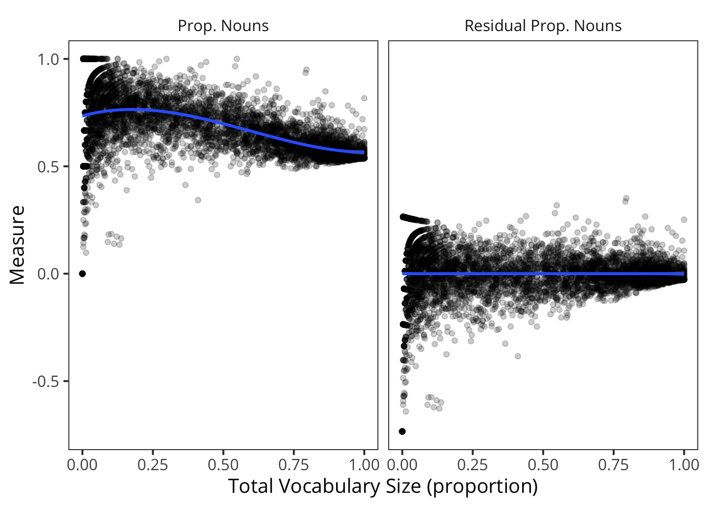
The figure above shows both the English noun-proportion data and the resulting residuals from that distribution when fit via a cubic model (blue curve). These residuals can then be used to test for incremental contributions to total vocabulary over and above age.
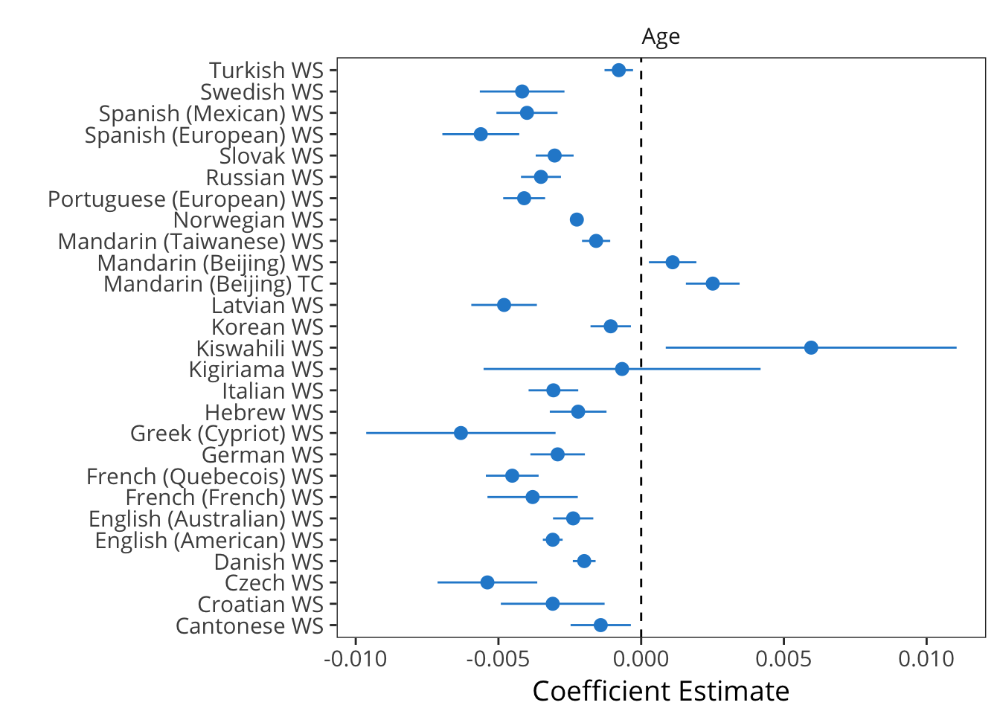
THIS MODEL APPEARS BROKEN - LOOK AT ANTI-CORRELATION OF RESIDUAL AND INTERACTION
As we might expect from the results presented earlier (see especwlly Figs 5 and i), the raw measure of referential style was significantly correlated with age(r=+0’3I, P<0’001) andtotalvocabularysize(r=+0’35,P<0’001), There was also a small but reliable correl8tion with birth order, indicating that later-born children have lower scores for referential style (r = - 0.12., P < 0’05). Finally, there were small but statistically significant co:nlntions with maternal education (r = +O’ 1 I, P < 0’05), paternal education (r = +O’II, P< 0’05) and paternal occupation (r = +0’10, P< 0’05). [n short, results obtained with the unadjusted scores for referential style replicate other reports in the literature using this measure. (Bates et al. 1994)
with percentiles:
The conelation with age was still significa.nt (r “’” +0’15, P < 0’01) - but notice that this is a positive correlation, suggesting that children high in referential style are actually somewhat older than children with proportionally fewer common nouns.
** ALSO NEEDS TO BE LOOKED AT IN WG DATA **
15.1.2 Quantifying variability in bias
Again following Bates et al. (1994), we can quantify residual variability in noun bias.
We begin by doing this in Words and Sentences.
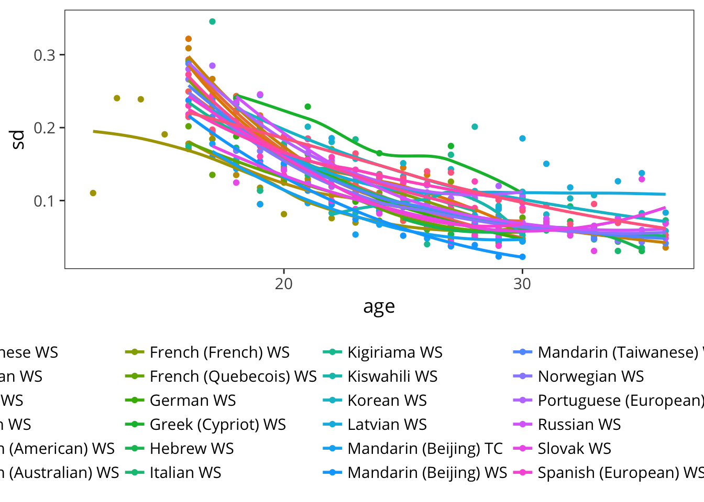
Variability was high but itself somewhat consistent. [** TODO: THINK ABOUT ERROR BARS **]
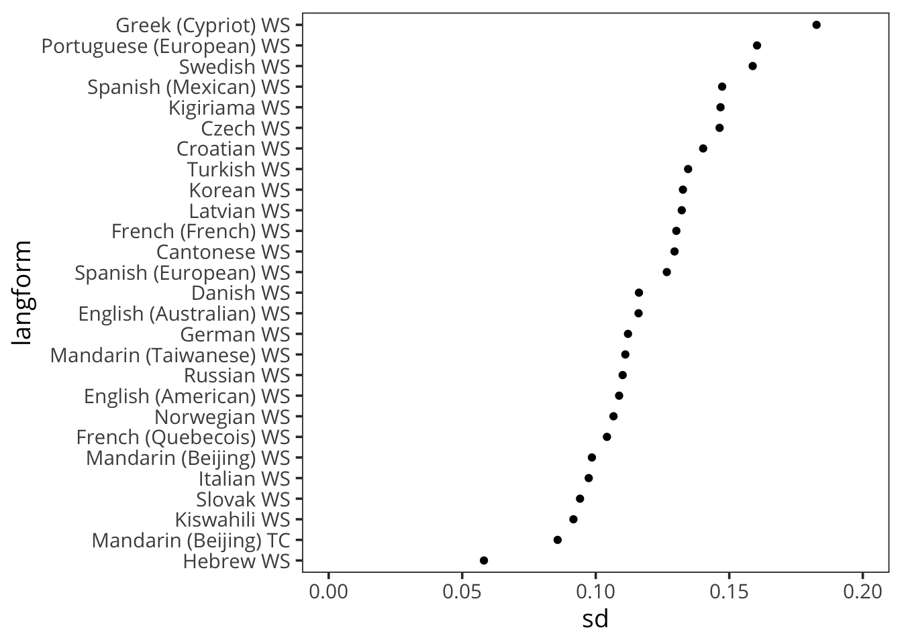
Bates et al. (1994) focus on variability being highest in the very earliest parts of word learning. We can verify this claim using Words and Gestures data.
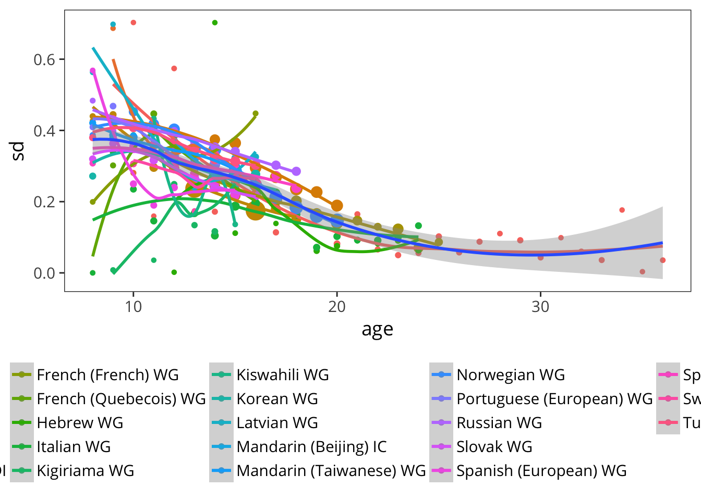 As discussed by Nelson (1973) and Bates et al. (1994), variability declines with age. Intuitively, this pattern makes sense – the point of most variability is when you have the smallest sample of words. A child who speaks one word can have either 0% or 100% noun representation. Everything gets less variable from there.
[ COULD DO CLOSED CLASS]
In analysing the correlates of closed-class style, we found some limited evidence in support of a link between rate of development (i,e. precocity) and closed-class proportion scores…
15.2 “Spurts” in Vocabulary
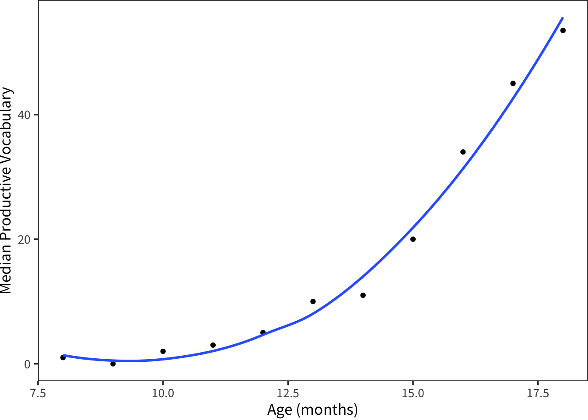
One of the most obvious aspects of early vocabulary is that it picks up speed over the second year after birth. First words are hard-won but soon children’s language appears to “explode.” This acceleration is easily visible in the plot above, which shows the median productive vocabulary from 8 - 18 months (English (American) Words and Gestures data). (We could measure the rate of learning by taking the derivative of this curve; but this rate calculation is slightly misleading for cross-sectional data and so we postpone this analysis until below). This increase in the rate of vocabulary learning has been much remarked on in the literature.
Many early authors discussed this rate change in terms of a “referential insight” (e.g., Kamhi 1986), which allows for faster and more accurate word learning (Dore 1974, (???)).
For example, Goldfield and Reznick (1990)
More recent computational work by (???) proposed that…. But this work does not answer the question of whether the rate does change.
Ganger and Brent (2004) provides an analysis of this question, using longitudinal data to examine changes in children’s growth rate via a curve fitting procedure.
 We use the dense longitudinal data available through the Norwegian dataset to examine this question. Because we are interested in computing changes in rate, we minimally need three datapoints from each child as a minimum. And the Ganger and Brent (2004) model actually requires at least four points to distinguish between a logistic model and a quadratic model. This winnowing leaves us with data from 114 children, whose growth curves are shown in the figure above.
We use the dense longitudinal data available through the Norwegian dataset to examine this question. Because we are interested in computing changes in rate, we minimally need three datapoints from each child as a minimum. And the Ganger and Brent (2004) model actually requires at least four points to distinguish between a logistic model and a quadratic model. This winnowing leaves us with data from 114 children, whose growth curves are shown in the figure above.
 The figure above shows data for those children with a starting vocabulary of less than 30 words and at least 6 datapoints measured. Each subplot shows the rate of growth (words/month) plotted by total vocabulary. The question of vocabulary spurts, as posed by Ganger and Brent (2004), is whether rate continues to increase (indicating constant acceleration) or whether it moves from one equilibrium point to another. The visual impression from the current data is certainly not clear.
The figure above shows data for those children with a starting vocabulary of less than 30 words and at least 6 datapoints measured. Each subplot shows the rate of growth (words/month) plotted by total vocabulary. The question of vocabulary spurts, as posed by Ganger and Brent (2004), is whether rate continues to increase (indicating constant acceleration) or whether it moves from one equilibrium point to another. The visual impression from the current data is certainly not clear.
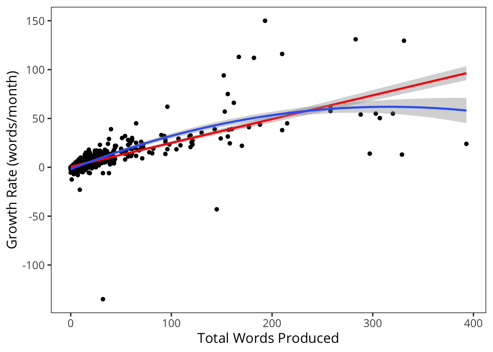 To calibrate our expectations regarding the function linking growth rate to total production, the figure below shows this relation for the full dataset. First, we should look beyond a few outliers that do not afect the overall fit much. Overall, we see a linear function (shown in red), with some deceleration towards the end. Intuitively, we should expect deceleration due to the measurement properties of the CDI form: as children learn more words, the form should tend to be less complete due both to ceiling effects (hard words not included) and omissions (easier words not included). (See E for more details on this issue).
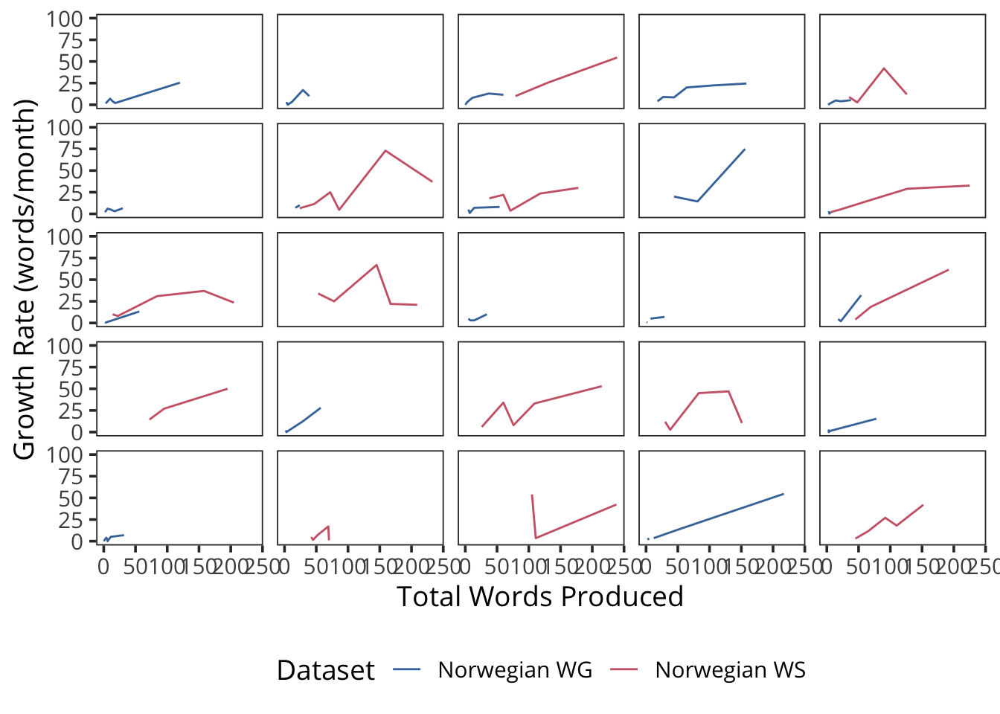 Attempting to avoid this issue, we can zoom in on the first 100 words (the focus of previous inquiries), where we see an extremely consistent linear function with essentially no quadratic elements.
Is this linear function consistent with a vocabulary spurt? In the case where children move between a lower rate of vocabulary acquisition and a second, higher rate of vocabulary acquisition, there will tend to be some deceleration as more and more children reach their higher equilibrium. It is not impossible to produce a linear function in this scenario, but it will only happen if children who experience a later spurt also have a higher rete
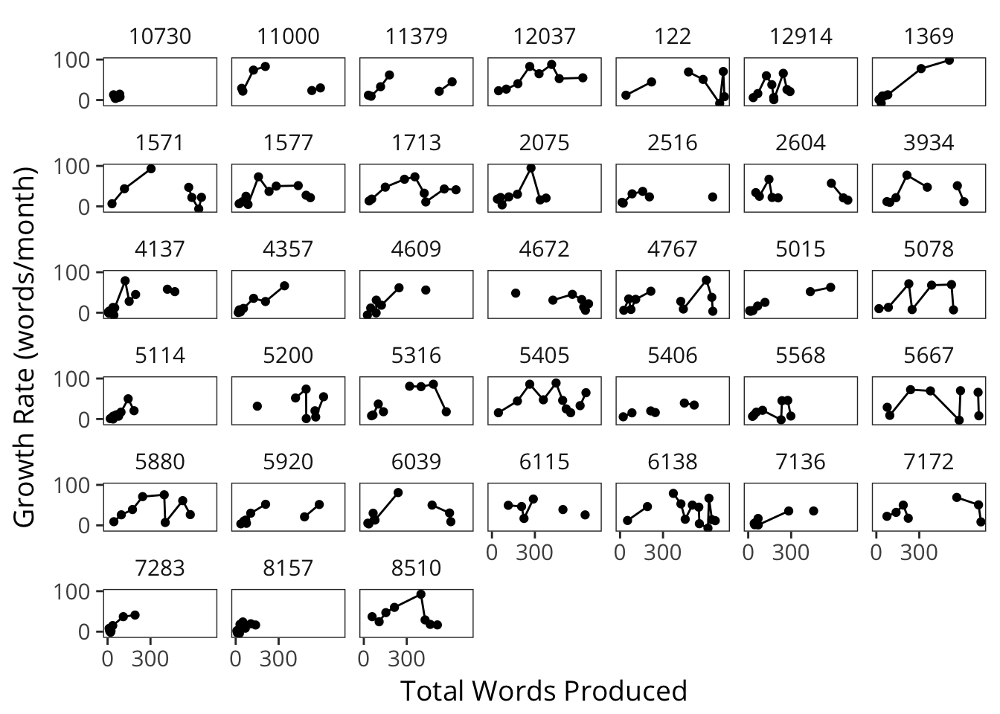 Examining Words and Sentences data for convergent evidence, we see the same general pattern of deceleration. In this case it is very clearly due to measurement issues as many children in this dataset are reaching ceiling.
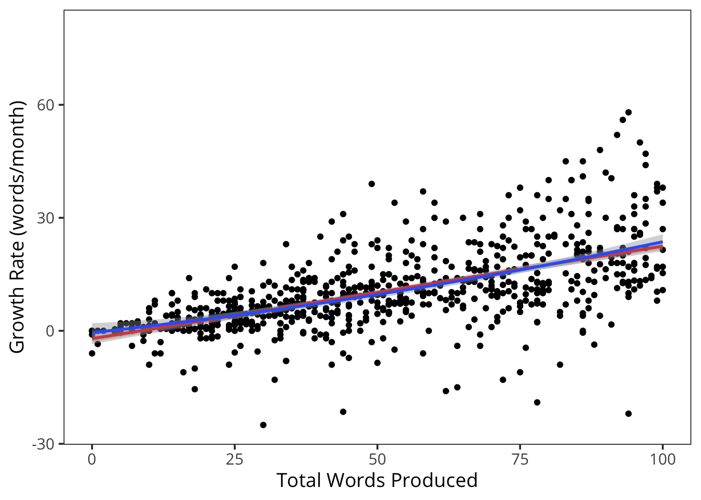 Again we can zoom in on the first 100 words, recognizing that this selects children who are likely later learners (because they are above 16 months due to the use of the WS form). And again we see a very linear relationship between vocabulary size and rate.
Overall,
15.3 Variation in Production vs. Comprehension
Our next investigation concerns the question of how tightly comprehension and production are yoked within CDI data. Our assumption is that there is variability between children on this dimension – while some children produce a large amount of language, others appear to produce less but still understand substantial amounts. How does the ratio of production to comprehension vary across ages, and across cultures?
Before we begin the analysis it is important to be clear that some of the pattern in this variable could be due to variation between parents in under- or over-reporting comprehension (or for that matter, production, but we assume – and Appendix ?? confirms that production reports likely carries more signal). For example, we might be detecting variation in the threshold at which parents assume that a response indicates comprehension. Some parents might be very liberal and recall a generally-understood story that included a particular word, while others might be searching for a specific anecdote that clearly illustrates comprehension of that word.
Of course this type of analysis can only be conducted on WG-type forms, because of the presence of comprehension information. We begin by investigating the American English WG data as an example.
RELEVANT FOR CLINICAL
CDI DATA HAS AN ARTIFACT - NEED OTHER SOURCES
MANY REASONS FOR PRODUCTION VARIATION
STABLE ACROSS LANGUAGES THOUGH
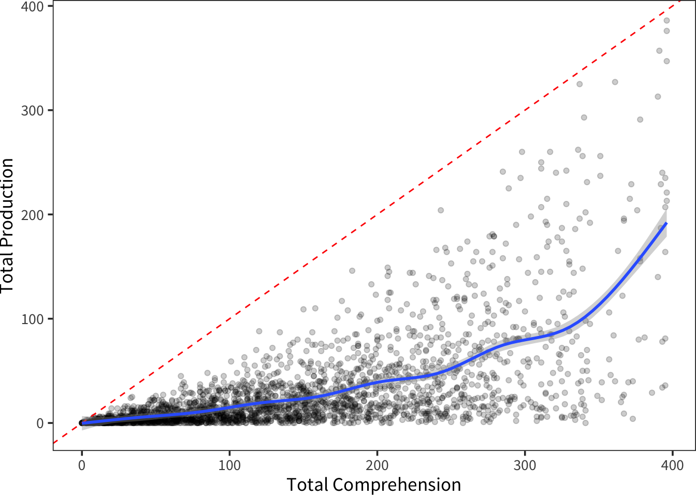
The figure above shows individual children’s comprehension and production plotted against one another. The diagonal indicates a child who comprehends and produces exactly the same number of words. In practice, this measure is always below the diagonal because by the design of the form, a child cannot “say but not understand” a particular word, they can only “understand” or “say and understand.” We can convert these data into a productivity ratio:
\[productivity = \frac{\# produced}{\# understood}\] and plot this ratio for all children.
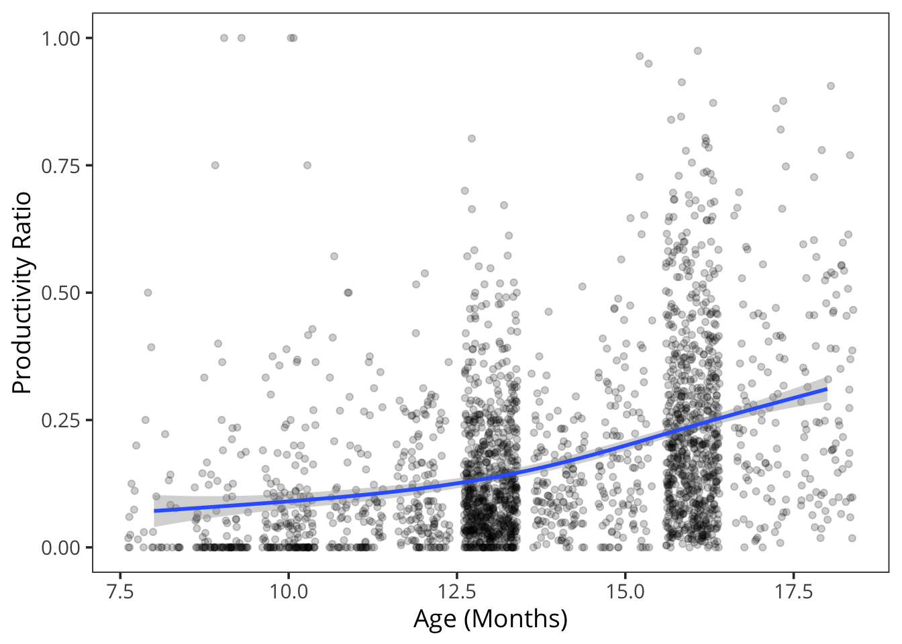 The resulting scatterplot is quite interpretable. It contains a few outliers at the very top of the range for very young children (whose parents report them producing and comprehending the same number of words). But for most others, the ratio is low, increasing from about 10% to 30% by the top of the form.
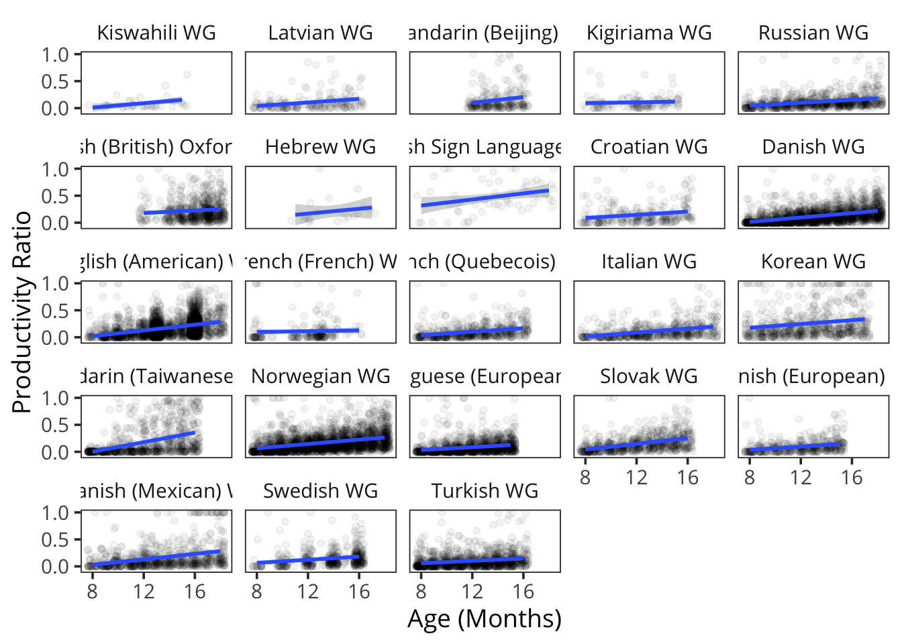
The figure above plots these productivity ratios by language for an age-restricted subset between 8 and 18 months. Plots are sorted by the mean productivity ratio. While the majority of languages show the same pattern as English (an increase from around 10% to 30%) there are some outliers that show a flatter slope.
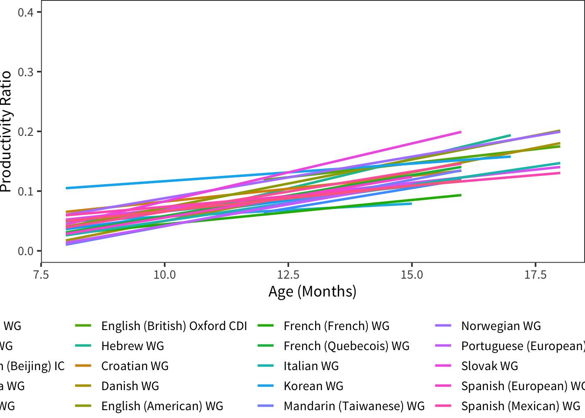
We can see this pattern even better by plotting the best-fit lines across languages. Nearly all of these go up with age and have similar slopes.
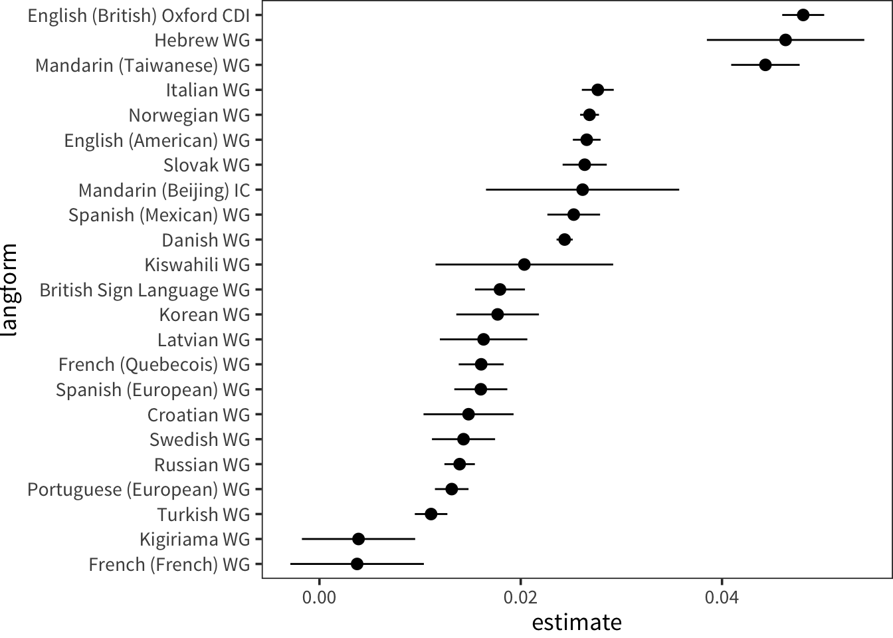
Going back to the scatter plots, however, in nearly every language to one degree or another, we see ratios > .95, indicating that parents are essentially not using “understands” as a separate option.
In this table, we see that a number of samples have substantial proportions of parents reporting comprehension in this way. While it is possible that these numbers represent actual children whose production is synchronized with their comprehension, a more parsimonious explanation is that there are local variations in administration, leading to some fraction of parents not completing the form properly. In particular, it does not appear that these “no comprehension without production” children are the tail of a shifted distribution of productivity ratios; instead, they appear to be due to a separate small population. Yet despite that they appear to have an outsized effect on our estimates of the development of productivity ratios across languages.In sum, although the relationship between production and comprehension is a fascinating locus for individual differences, we may not be able to measure this relationship effectively using cross-linguistic comprehension data. Further, these analyses underscore the importance of instructions regarding comprehension in CDI administration.
15.4 Vocabulary Composition and Syntactic Growth
Caught up in this discussion is the question of whether there is a route into language via the memorization of “frozen phrases.” This is an independent theoretical question that is difficult to address with CDI data as it is a question about the repetitive use of chunks of language in production. One observation is that, due to evidence of early verb generalization (e.g., Gertner, Fisher, and Eisengart 2006), the original discussion about limited generalization in children’s early syntax has been somewhat subsumed into a discussion about differences between general comprehension and conservative production.↩
Referential style was also associated with a variety of other variables like socioeconomic status and birth order that are themselves related to vocabulary outcomes.↩